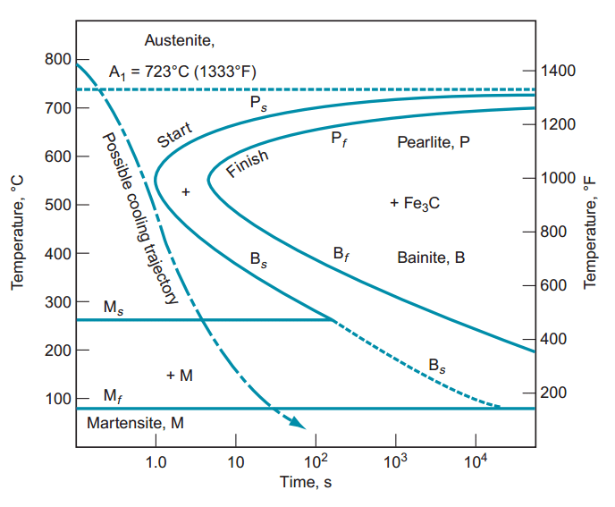

Heat Treating Steel - A Lesson in Material Science
When a carbon steel is heated and rapidly cooled (typically in a quenching solution), it becomes hard due to the formation of different microstructures within the steel (i.e. martensite). This can be observed in the TTT diagram to the left where martensite can be formed by rapid cooling.
It is important to note that cooling too rapidly can introduce large stresses on the steel which can cause cracks to form or even complete rupture. As such a quenching medium like oil (for oil hardening steels) is used to ensure an optimal cooling path.
After hardening, martensite is hard but also very brittle and can break easily. The martensite is tempered by heating it up to ~200°C (depending upon the tempering process) and allowed to remain at that temperature to reduce internal stress and produce a finer grain structure with more impact resistence as shown in the grain structures below.
Martensite
Rapid cooling forms martensite which has a large crystalline grain structure. The steel becomes hard and brittle which can withstand wear but cannot handle impact loads.
Tempered Martensite
Tempering martensite by heating it up and holding at a set temperature releaves internal stresses of the material and improves ductility/impact resistence while still remaining relatively hard.

Heavily Tempered Martensite
Heavily tempering martensite vastly improves impact resistence but also decreases hardness.